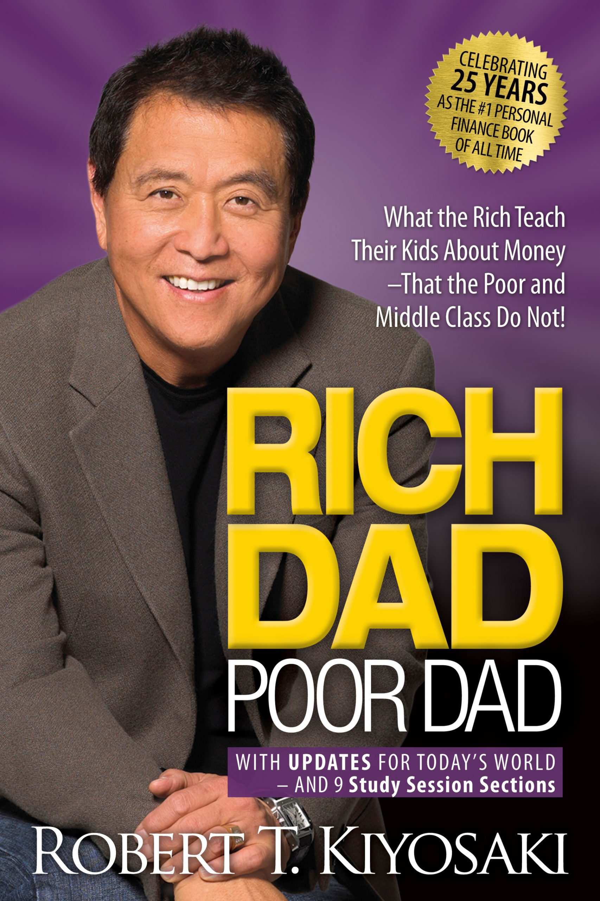
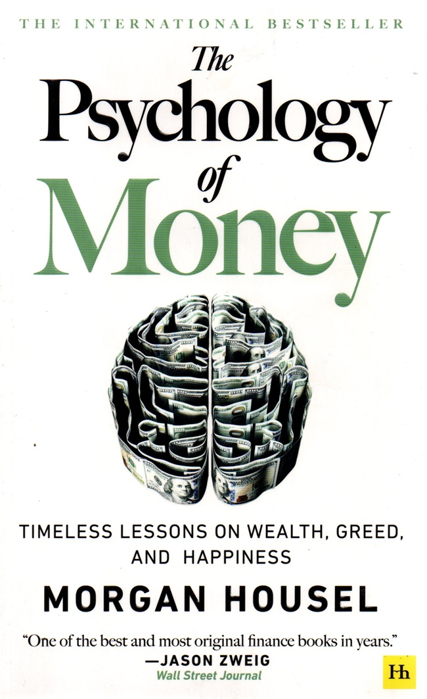
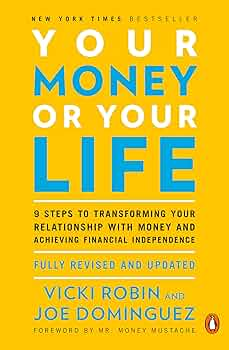
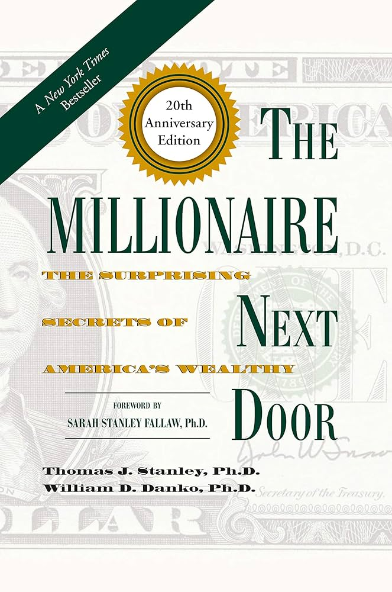
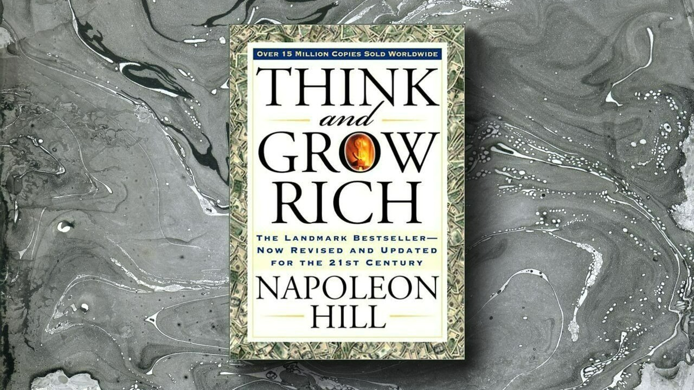
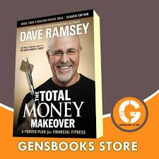
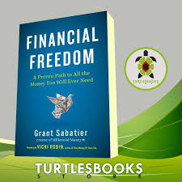

Literasi Finansial
Rich Dad Poor Dad
Robert T. Kiyosaki

Isi singkat: Mengajarkan perbedaan pola pikir orang kaya dan miskin dalam mengelola uang.
Pelajaran utama: Uang harus bekerja untuk kita, bukan sebaliknya.
Tingkat: Pemula – Menengah
The Intelligent Investor
Benjamin Graham

Isi singkat: Panduan investasi jangka panjang yang bijak dan disiplin.
Pelajaran utama: Investasi memerlukan analisis dan kesabaran.
Tingkat: Menengah – Lanjut
The Psychology of Money
Morgan Housel

Isi singkat: Menjelaskan pengaruh perilaku dan emosi terhadap keputusan keuangan.
Pelajaran utama: Keuangan pribadi lebih ditentukan oleh perilaku.
Tingkat: Pemula – Menengah
Your Money or Your Life
Vicki Robin & Joe Dominguez

Isi singkat: Mengubah cara pandang terhadap uang untuk hidup yang lebih bermakna.
Pelajaran utama: Fokus pada kebebasan finansial, bukan hanya kekayaan materi.
Tingkat: Pemula – Menengah
The Millionaire Next Door
Thomas J. Stanley & William D. Danko

Isi singkat: Berdasarkan riset, orang kaya umumnya hidup sederhana dan menabung.
Pelajaran utama: Gaya hidup sederhana penting untuk kekayaan jangka panjang.
Tingkat: Pemula – Menengah
Think and Grow Rich
Napoleon Hill

Isi singkat: Kekuatan pikiran positif dalam membangun kesuksesan finansial.
Pelajaran utama: Kesuksesan dimulai dari cara berpikir dan keyakinan diri.
Tingkat: Pemula – Menengah
The Total Money Makeover
Dave Ramsey

Isi singkat: Langkah praktis keluar dari utang dan mencapai stabilitas finansial.
Pelajaran utama: Disiplin dan perencanaan sederhana dapat mengubah hidup.
Tingkat: Pemula
I Will Teach You to Be Rich
Ramit Sethi

Isi singkat: Panduan modern untuk menabung, berinvestasi, dan mengatur keuangan otomatis.
Pelajaran utama: Gunakan sistem otomatis agar keuangan stabil tanpa stres.
Tingkat: Pemula – Menengah
Financial Freedom
Grant Sabatier

Isi singkat: Perjalanan dari nol hingga mandiri finansial sebelum usia 30 tahun.
Pelajaran utama: Strategi dan disiplin bisa membawa kebebasan finansial.
Tingkat: Menengah
The Barefoot Investor
Scott Pape
Isi singkat: Panduan keuangan keluarga yang sederhana dan praktis.
Pelajaran utama: Keuangan sehat dimulai dari kebiasaan kecil sehari-hari.
Tingkat: Pemula